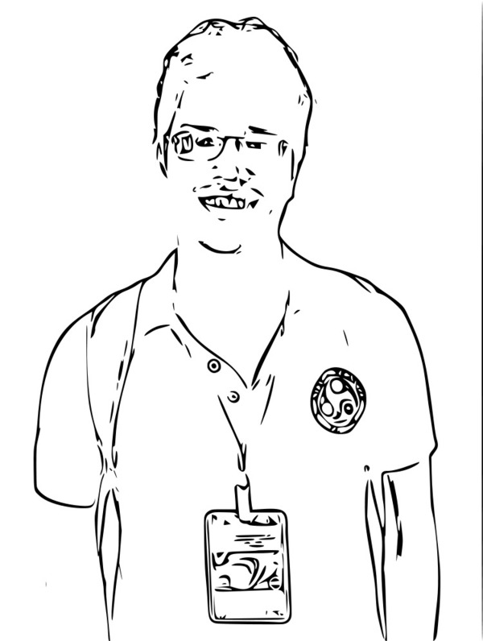

Curriculum Vitae |
I am a PhD candidate in Computer Science and Engineering Department at IIT Guwahati. I work as a student researcher in Machine Learning and Data Mining Group. I am advised by Dr. Ashish Anand.
My research interests include topics in Biomedical and Clinical Natural Language Processing. Currently I am working on Deep Learning models for information extraction in medical literatures. Prior to joining IITG, I have completed my Master's in School of Computer and Information Science,University of Hyderabad, where I was fortunate to work with Prof. K Narayana Murthy in Natural Language Processing area. And before that, I was a graduate student in the Department of Computer Science and Engineering, ITGGU Bilaspur . |
Publications
2016- Sunil Kumar Sahu, Ashish Anand, Krishnadev Oruganty, Mahanandeeshwar Gattu. "Relation extraction from clinical texts using domain invariant convolutional neural network". BioNLP at ACL-2016, Berlin, Germany, Aug-2016.pdf | Poster | Code | Bibtex
- Sunil Kumar Sahu, Ashish Anand. "Recurrent neural network models for disease name recognition using domain invariant features". ACL-2016, Berlin, Germany, Aug-2016.pdf | Poster | Code | Bibtex
- Ranti D Sharma, Samarth Tripathi, Sunil Kumar Sahu, Sudhanshu Mittal, Ashish Anand. "Predicting Online Doctor Ratings from User Reviews Using Convolutional Neural Networks". ICMLC-2016 , Hong Kong, Feb-2016. pdf |Bibtex
- Muneeb TH, Sunil Kumar Sahu, Ashish Anand. "Evaluating distributed word representations for capturing semantics of biomedical concepts". BioNLP at ACL-2015, Beijing, China, July-Aug 2015 pdf | Poster | Bibtex
Work Experience
- Research Intern at Text and Graph Analytics Group, Xerox Research Center India Bangalore from July 2016 to October 2016
- Mentor: Dr. Sandya Mannarswamy, Research Scientist, XRCI Bangalore
- Research Intern at Text Analytics Group,GVK Bioscience Pvt Ltd Hyderabad from Feb 2016 to April 2015
- Mentor: Dr. Krishnadev Oruganty, Research Scientist, GVK Bio Hyderabad